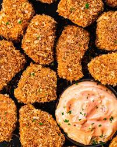

Tofu Nuggets Recipe

Tofu Nuggets Description
A vegetarian twist on chicken nuggets. Freezing and thawing the tofu gives it a chewier, meatier texture. You can freeze tofu ahead of time and store in freezer for up to a month.
Ingredients
- 1 (14 ounce) package extra-firm tofu, drained, or to taste
- 1 cup ranch dressing
- 1 tablespoon Louisiana-style hot sauce (Optional)
- 2 teaspoons white sugar
- 1 teaspoon ground black pepper
- 2 cups Italian seasoned bread crumbs
Steps
- Slice tofu block in half lengthwise. Cut each half into 1/3-inch slices to make bite-sized 'nuggets.' Place tofu in resealable plastic bags and freeze until firm and dry, at least 24 hours.
- Preheat the oven to 350 degrees F (175 degrees C).
- Place tofu slices on a microwave-safe plate. Heat in the microwave until defrosted, 2 to 5 minutes. Squeeze out water from the tofu and place slices over 3 layers of paper towels to drain. Pat dry with additional paper towels.
- Mix ranch dressing, hot sauce, sugar, and black pepper together in a bowl. Pour bread crumbs into a separate bowl. Coat tofu slices with the ranch mixture and roll in bread crumbs until thoroughly coated.
- Bake in the preheated oven until tofu nuggets are golden brown, 20 to 25 minutes.
Cooking Notes
Instead of microwaving, thaw tofu in the refrigerator if you have time.